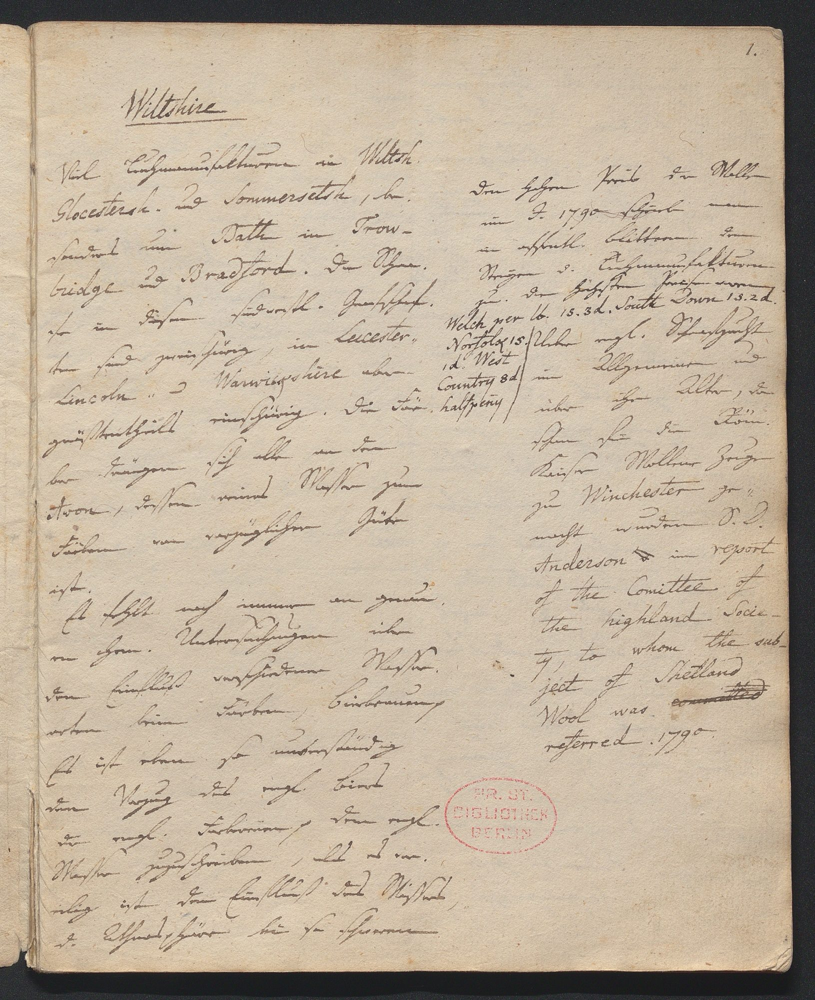

Edition lines not found (3)
Norfolk 1s.Norfolk 1s.
Country 8dCountry 8d
halfpen̅y.halfpen̅y.
1.1.1.
WiltshireWiltshireWiltshire
Viel Tuchmanufakturen in Wittsh.
Gloucestersh. und Sommersetsch, be-
sonders um Batte in Trow-
bridge und Bradford. Die Schaa-
se in diesem südwestl. Grafschaf-
ten sind zweischürig, in Leicester.
Lincoln- und Warwickshire aber
größtentheils einschürig. Die Far-
ber drängen sich alle an den
Avon, dessen reines Wasser zum
Färben von vorzüglicher Güte
ist.
Es fehlt noch immer an genau-
en chem. Untersuchungen über
den Einfluß verschiedener Wasser-
arten beim Farben, Bierbrauen p
Es ist eben so unverständig
den Vorzug des engl. Biers
der engl. Farbereien p dem engl.
Wasser zuzuschreiben, als es vor-
eilig ist den Einfluß des Wassers
d. Athmosphäre bei so schwerenViel Tuchmanufakturen in Wiltsh.
Glocestersh. und Sommersetsh., be-
sonders um Bath in Trow-
bridge und Bradford. Die Schaa-
fe in diesen südwestl. Grafschaf-
ten sind zweischürig, in Leicester-
Lincoln- ud Warwickshire aber
größtentheils einschürig. Die Fär-
ber drängen sich alle an den
Avon, dessen reines Wasser zum
Färben von vorzüglicher Güte
ist.
Es fehlt noch immer an genau-
en chem. Untersuchungen über
den Einfluß verschiedener Wasser-
arten beim Färben, Bierbrauung
Es ist eben so unverständig
den Vorzug des engl. Biers
der engl. Färbereien p dem engl.
Wasser zuzuschreiben, als es vor-
eilig ist den Einfluß des Wassers,
d. Athmosphäre bei so schwerenViel Tuchmanufakturen in WittshWiltsh.
GloucestershGlocestersh. und SommersetschSommersetsh., be-
sonders um BatteBath in Trow-
bridge und Bradford. Die Schaa-
sefe in diesemdiesen südwestl. Grafschaf-
ten sind zweischürig, in Leicester.-
Lincoln- undud Warwickshire aber
größtentheils einschürig. Die FarFär-
ber drängen sich alle an den
Avon, dessen reines Wasser zum
Färben von vorzüglicher Güte
ist.
Es fehlt noch immer an genau-
en chem. Untersuchungen über
den Einfluß verschiedener Wasser-
arten beim FarbenFärben, Bierbrauen pBierbrauung
Es ist eben so unverständig
den Vorzug des engl. Biers
der engl. FarbereienFärbereien p dem engl.
Wasser zuzuschreiben, als es vor-
eilig ist den Einfluß des Wassers,
d. Athmosphäre bei so schweren
Den hohen Preis der Wolle
im J. 1790 schrieb man
in öffentl. Blättern denDen hohen Preis der Wolle
im J. 1790 schrieb man
in öffentl. Blättern demDen hohen Preis der Wolle
im J. 1790 schrieb man
in öffentl. Blättern dendem
Steigen d. Cuhmanufakturen
zu. Die höchsten Preise waren
Welch per lb. 15.3 d. South Down 13.2 d.
Norfolk 15. (Ueber engl. Schafzucht
id. WestSteigen d. Tuchmanufakturen
zu. Die höchsten Preise waren
Welch per lb. 1s. 3d. South Down 1s. 2d.
Ueber engl. Schaafzucht
1d. WestSteigen d. CuhmanufakturenTuchmanufakturen
zu. Die höchsten Preise waren
Welch per lb. 151s.3 d3d. South Down 131s.2 d2d.
Norfolk 15. (Ueber engl. SchafzuchtSchaafzucht
id1d. West
im Allgemeinen undim Allgemeinen undim Allgemeinen und
über ihr Alter, da
schon für die Röm.
Kaiser Wollene Zeuge
zu Winchester ge-über ihr Alter, da
schon für die Röm.
Kaiser Wollene Zeuge
zu Winchester ge-über ihr Alter, da
schon für die Röm.
Kaiser Wollene Zeuge
zu Winchester ge-
macht wurden S. D.
Anderson im report
of the Comittee of
the highland Socie-
ty, to whom the sub-
ject of Shetland
Wool was
referred. 1790.macht wurden S. D.
Anderson im report
of the Comittee of
the highland Socie-
ty, to whom the sub-
ject of Shetland
Wool was
referred. 1790.macht wurden S. D.
Anderson im report
of the Comittee of
the highland Socie-
ty, to whom the sub-
ject of Shetland
Wool was
referred. 1790.
Norfolk 1s.Norfolk 1s.
Country 8dCountry 8d
halfpen̅y.halfpen̅y.